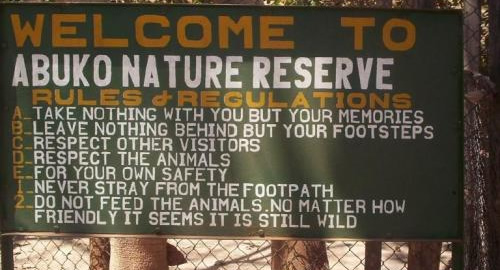

Abuko National Park is a nature reserve in the Gambia lying south of the town of Abuko. It is a popular tourist attraction and was the country's first designated wildlife reserve.Flora
The flora consists of a typical savanna and gallery forest landscape. Typical trees, up to thirty feet high, are: oil palm, mahogany, iroko and anthocleista procera.
Fauna
There are a three primate species: vervet monkeys, red colobus monkeys and patas monkeys. Other mammals include antelope, squirrel, porcupine, African palm civets, mongooses, galagos, and several types of rodents, including cane rats.
Among the reptiles at the park are monitor lizard, Nile crocodile, dwarf crocodile, spitting cobra, black cobra, python, puff adder and green mamba. More than 270 bird species have been recorded in the forest. There are also numerous butterflies and moths.
At one end of the site are several enclosures which serve as an orphanage for needy animals, including an enclosure in which a pack of hyenas is held.
Ownership
Kachikally is a privately owned shrine belonging to the Bojang family of Bakau, one of the founding families and major land owners of the city. Kachikally is also the name of the central district of Bakau town; other districts are Sanchaba and New Town.
Crocodiles
Visitors are able to touch the crocodiles
The exact number of crocodiles is not known but it is estimated that there are about 80. All the animals are Nile crocodiles which can grow to 4.5 metres and live as long as a man. There have been reports of the presence of albino crocodiles, adding to the uniqueness of the place. Perhaps the most famous crocodile was Charlie, who like all other crocodiles was allowed to roam freely, and can be approached and touched by visitors. Crocodiles found in the wild are sometimes taken to and reared at the holy pools.
History
It is named after Albert, Prince Consort, husband of Queen Victoria of the United Kingdom of Great Britain and Ireland, who controlled the Gambia during colonial times.
History
The Gambia National Museum opened in 1985, fifteen years after the Friends of the National Museum Association was established in 1970. The 1974 Monuments and Relics Act followed, which set into motion the plans for the National Museum. The museum’s primary goal is the collection and preservation of artifacts documenting the material culture of the Gambia, as well as to educate both visitors to the country and residents who may not be familiar with Gambian history.
Discussions about starting a national museum started in the 1960s, and for the two decades leading up to the museum’s inauguration, historians and archaeologists collected artifacts and information on Gambian and West African history and culture. Bakari Sidibe, Abdoulie Bayo and Baba Ceesay were pioneer staff of the new museum.
At the Gambia National Museum, you can learn about the cultural heritage of the Gambia, like who the Super Eagles were and what a masquerade is. In late 1999, Hassoum Ceesay, a new graduate in history became Curator and soon worked with his superior officer, Baba Ceesay, to revamp a part of the original exhibition with a display on the history and Culture and Banjul, the capital. As curator Hassoum also instituted children's museum activities such as art classes and history video shows, and a robust fine art temporary art exhibition programme which exhibited paintings and sculpture by Gambian and foreign artists.
Museum Description
The museum houses three floors of exhibits. The ground floor displays the political and cultural history of the nation’s capital, Banjul. On the basement level, you can learn about the musical heritage of the Gambia and see what instruments are popular throughout the country and on the second floor, you can learn about the archaeological history of West Africa and the Gambia. The floor also details the nation’s colonial and post- Independence political and economic history. The museum has got a sound educational value. Gambian School children form the largest group of visitors, and the museum education programme of art classes, quiz, history video shows etc. have become supplementary to civics and social studies classes. The museum is also the most important tourist attraction in the Greater Banjul Area. It is playing its role in tourism promotion. Of course, the museum embodies the countries cultural and historical identity with its photo archives detailing over 70 years of Gambian history.
Administration
The Gambia National Museum is not an autonomous public body. It falls under the administrative purview of the National Centre for Arts and Culture, NCAC. The National Centre for Arts and Culture (NCAC) is a semi autonomous institution established by an Act of Parliament in 1989 to promote and develop Gambian Culture. It takes care of performing and fine arts, copyright, sites and monuments and museums. There are other public museums under the stable of the NCAC: Arch 22 museum in Banjul; Slavery museum in Juffureh; Wassu Stone Circles Museum at Wassu, 300 km from Banjul; Fort Bullen Museum in Barra, and the Culture museum at Kerr Batch Stone circles site in the Central River Region. Kachikally sacred crocodile museum in Bakau, 15 km outside Banjul and Tanji village museum are privately run.